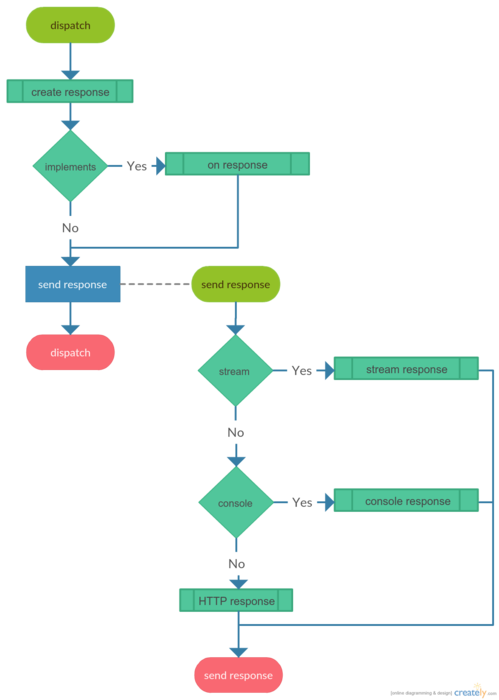

Application Responses¶
Web applications should return some kind of response to be sent back to the user. In most cases you should mainly deal with the HTTP response by default. However, you can use other response types or create your own.
Explanation:
1) Creating a response.
- The default response object is created at the beginning of application dispatch.
- A different response could be set like following:
use WebinoAppLib\Event\AppEvent;
use WebinoAppLib\Event\DispatchEvent;
$app->bind(AppEvent::DISPATCH, function (DispatchEvent $event) {
$event->setResponse(new MyResponse);
});
2) Emitting a send response event.
- The send response event is emitted as soon as application dispatch finishes.
- Bind to a send response event like following:
use WebinoAppLib\Event\SendResponseEvent;
$app->bind(SendResponseEvent::class, function (SendResponseEvent $event) {
// do something...
});
3) Handling a on response.
- The on response function is called on a response object if it is supported so.
- Create custom response with on response handling support like following:
use WebinoAppLib\Event\DispatchEvent;
use WebinoAppLib\Response\OnResponseInterface;
use Zend\Stdlib\ResponseInterface;
class MyResponse implements
OnResponseInterface,
ResponseInterface
{
public function onResponse(DispatchEvent $event)
{
// do something...
}
}
4.a) Sending a stream response.
- A stream response sender is used to send response of a stream type.
use WebinoAppLib\Event\AppEvent;
use WebinoAppLib\Event\DispatchEvent;
use WebinoAppLib\Response\StreamResponse;
$app->bind(AppEvent::DISPATCH, function (DispatchEvent $event) {
$event->setResponse(new StreamResponse('my/folder/test.txt'));
});
4.b) Sending a console response.
- A console response sender is used to send response of a console type and it’s created by default in the command line environment.
4.c) Sending an HTTP response.
- HTTP response sender is used to send response of an HTTP type and it’s created by default in the HTTP server environment.
Response Types¶
TODO...
text response...
xml response...
json response...
response stream...
file download...
Redirecting¶
TODO...